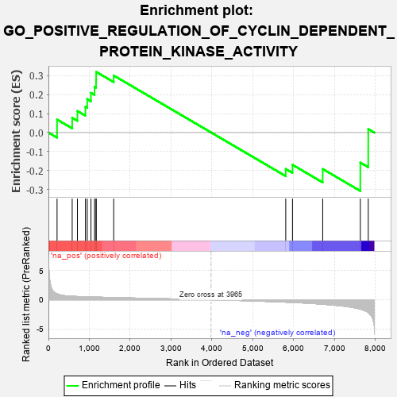

| | | Dataset | 7d |
| Phenotype | NoPhenotypeAvailable |
| Upregulated in class | na_pos |
| GeneSet | GO_POSITIVE_REGULATION_OF_CYCLIN_DEPENDENT_PROTEIN_KINASE_ACTIVITY |
| Enrichment Score (ES) | 0.31899953 |
| Normalized Enrichment Score (NES) | 0.8747257 |
| Nominal p-value | 0.625 |
| FDR q-value | 0.86545634 |
| FWER p-Value | 1.0 |
Table: GSEA Results Summary

Fig 1: Enrichment plot: GO_POSITIVE_REGULATION_OF_CYCLIN_DEPENDENT_PROTEIN_KINASE_ACTIVITY
Profile of the Running ES Score & Positions of GeneSet Members on the Rank Ordered List
| PROBE | GENE SYMBOL | GENE_TITLE | RANK IN GENE LIST | RANK METRIC SCORE | RUNNING ES | CORE ENRICHMENT | | 1 | SPDYA | | | 211 | 1.026 | 0.0684 | Yes |
| 2 | CCNB1 | | | 581 | 0.601 | 0.0777 | Yes |
| 3 | CDC6 | | | 709 | 0.557 | 0.1133 | Yes |
| 4 | STOX1 | | | 905 | 0.506 | 0.1356 | Yes |
| 5 | CCND2 | | | 949 | 0.496 | 0.1760 | Yes |
| 6 | AKT1 | | | 1040 | 0.476 | 0.2087 | Yes |
| 7 | SRC | | | 1128 | 0.459 | 0.2402 | Yes |
| 8 | CKS2 | | | 1165 | 0.452 | 0.2775 | Yes |
| 9 | CCNY | | | 1168 | 0.451 | 0.3190 | Yes |
| 10 | CCNK | | | 1596 | 0.374 | 0.3000 | No |
| 11 | CCNT2 | | | 5804 | -0.406 | -0.1912 | No |
| 12 | TTBK1 | | | 5969 | -0.460 | -0.1692 | No |
| 13 | EGFR | | | 6708 | -0.765 | -0.1911 | No |
| 14 | PKD1 | | | 7628 | -1.611 | -0.1576 | No |
| 15 | PKD2 | | | 7822 | -2.167 | 0.0187 | No |
Table: GSEA details [plain text format]
Fig 2: GO_POSITIVE_REGULATION_OF_CYCLIN_DEPENDENT_PROTEIN_KINASE_ACTIVITY: Random ES distribution
Gene set null distribution of ES for GO_POSITIVE_REGULATION_OF_CYCLIN_DEPENDENT_PROTEIN_KINASE_ACTIVITY